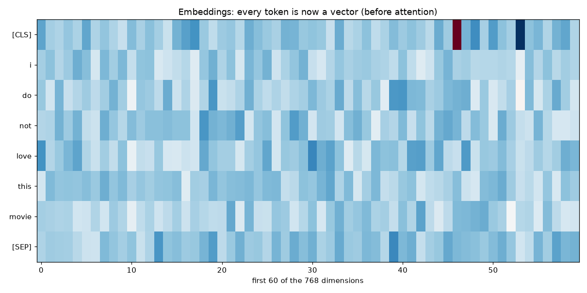
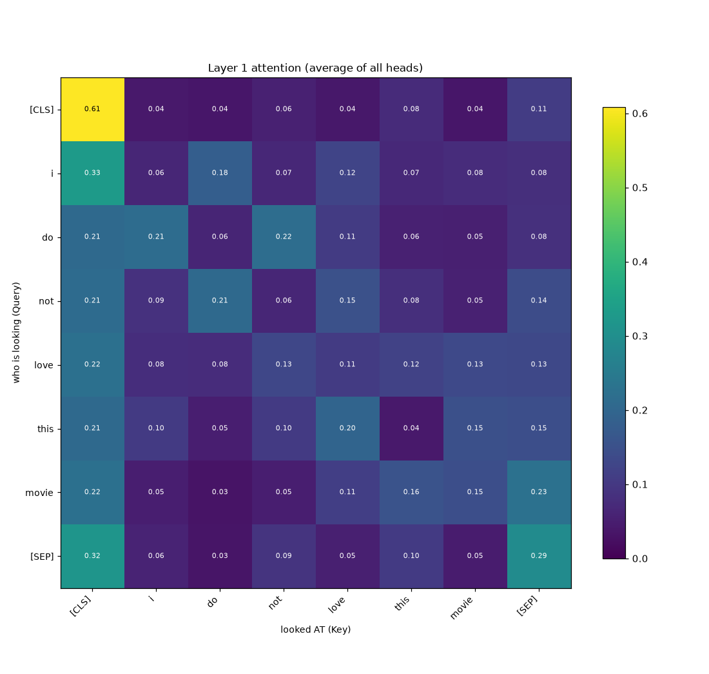
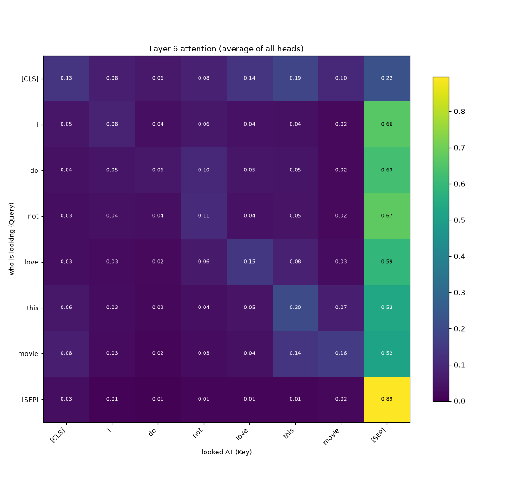
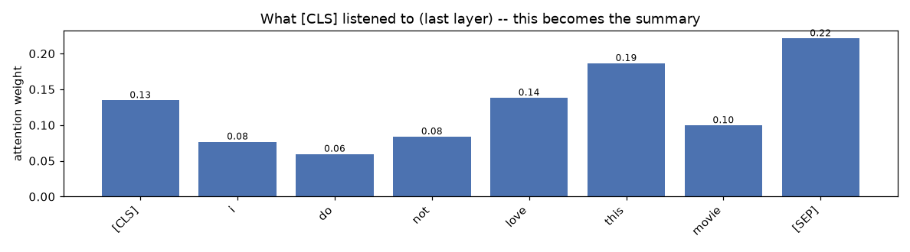
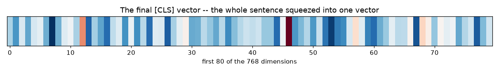
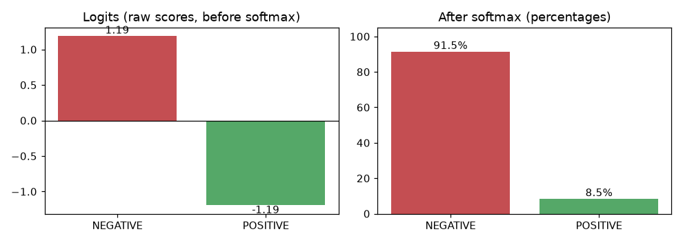

Input sentence: I do not love this movie
The model cannot read letters, only numbers. First the text is chopped into tokens, and each token is looked up in the model's ~30k-entry vocabulary to get its row number. Notice two tokens the model adds on its own:
| # | token | id | note |
|---|---|---|---|
| 0 | [CLS] | 101 | added by the model |
| 1 | i | 1045 | |
| 2 | do | 2079 | |
| 3 | not | 2025 | |
| 4 | love | 2293 | |
| 5 | this | 2023 | |
| 6 | movie | 3185 | |
| 7 | [SEP] | 102 | added by the model |
A row number carries no meaning — it is just an address, like a seat number. The embedding table turns each address into a vector of 768 numbers that does carry meaning: words with similar meanings get nearby vectors.

This is the heart of the Transformer. Each word asks a question (Query), every other word offers a label (Key), the two are compared to see how relevant they are, and the word then borrows meaning (Value) in proportion to that relevance. The result: a new, sentence-aware vector for every word.
Read the heatmap like this: each row is a word doing the looking, each column is a word being looked at. A bright cell means "this word paid a lot of attention to that one." Every row adds up to 1.00 (100% of its attention).


Since [CLS] also participates in attention, it listens to the words
and folds them into a single vector. This bar chart is row 0 of the last attention
map — literally what the summary token listened to.


[CLS] vector: the entire sentence squeezed
into 768 numbers. This is the only thing the decision layer sees.A small dense layer takes the summary vector, multiplies each number by a learned weight, adds them up, adds a bias, and produces two raw scores called logits. Logits are not percentages — they are just "how much the model leans each way." Softmax then converts them into percentages that add to 100%, exaggerating the gap between them along the way.

| class | logit (raw) | after softmax |
|---|---|---|
| NEGATIVE | 1.1882 | 91.53% |
| POSITIVE | -1.1923 | 8.47% |
"I do not love this movie"
| tokenize
v ['[CLS]', 'i', 'do', 'not', 'love', 'this', 'movie', '[SEP]']
| vocabulary lookup
v [101, 1045, 2079, 2025, 2293, 2023, 3185, 102]
| embedding table
v 8 vectors x 768 numbers
| 6 layers of self-attention
v 8 sentence-aware vectors
| take the [CLS] vector
v 1 summary vector
| dense
v logits [1.19, -1.19]
| softmax
v ['91.5%', '8.5%']
| pick the biggest
v NEGATIVE